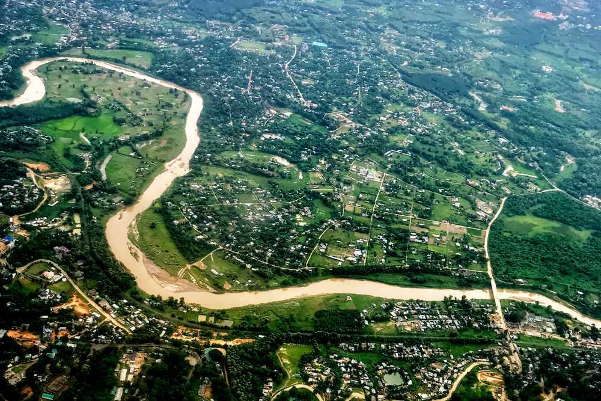

Kohima is the hilly capital of Nagaland, which is one of the seven sister states of India. ‘Kohima’ is the anglicized name given by the British, the original name being 'Kewhira' derived from the Kewhi flowers found in the region.
The most significant urban centre in all of Nagaland after Dimapur and Kohima and the home of Ao Naga.

Known to be the largest and fastest growing city of Nagaland, most travellers come to this city in transit because of the airport situated in the city. Some of the few attractions here are: Triple Falls, Kachari Ruins, the Nagaland science center and the zoological park.
Tuensang is the headquarters of the Tuensang district, the easternmost, largest district of Nagaland, and flanked by Myanmar on its right side.
Phek is a hilly area rich in flora and fauna. Apart from the spell bounding hills, Shilloi lake is an important attraction.
Located some 25 km south of Kohima, Dzukou valley and Japfu Peak offer one of the most breathtaking landscapes of the continent. Nagaland is called the 'Switzerland of the East' and Dzukou valley and Japfu Peak provide solid proof to that moniker.

A beautiful foot shaped lake in the heart of the Patkai range of Nagaland, Shilloi Lake is a very picturesque destination with verdant valley surrounding it from all sides.
Nagaland offers excitement to wildlife enthusiasts and nature lovers in the form of Intanki Wildlife Sanctuary. Spread over a vast 200 sq km area, the wildlife reserve houses exotic beings such sloth bears, wild dogs, flying squirrels, barking deer and black storks among many more!
Known as the Land of Anghs, Mon is the land of captivating KonyakNagas. Visit Mon to experience the exquisite culture and traditions of the KonyakNagas.

Notching a top altitude of 1969 meters, the Mount Tiyi in Wokha district is a popular tourist destination for the breathtaking views of Nagaland. Do not miss out on a never-seen-before views of the River Doyang from the top of the mountain.

The Kachari Ruins, also known as DimasaKachari Ruins, is a series of mushroom domed pillars, housing the mysterious remnants which are believed to be erected by the DimasaKachari Kingdoms during the 13th century.

Spread over an area of 123 sq. km and known as the Green Village of India, Khonoma is one of the most beautiful tourist destinations in Nagaland owing to its thick forests.